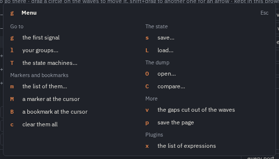
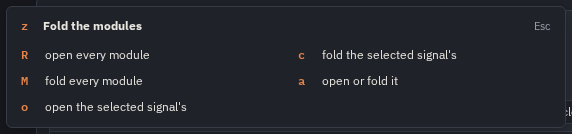
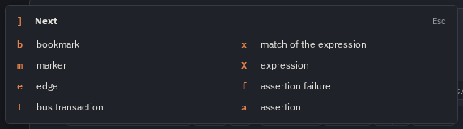
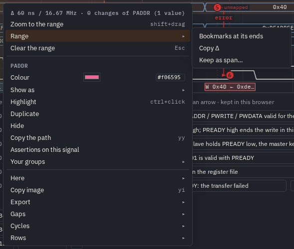
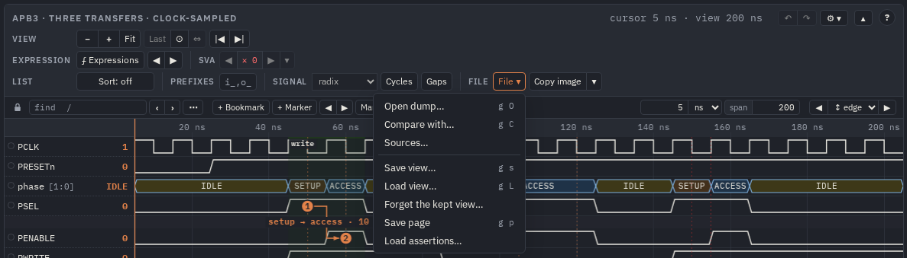
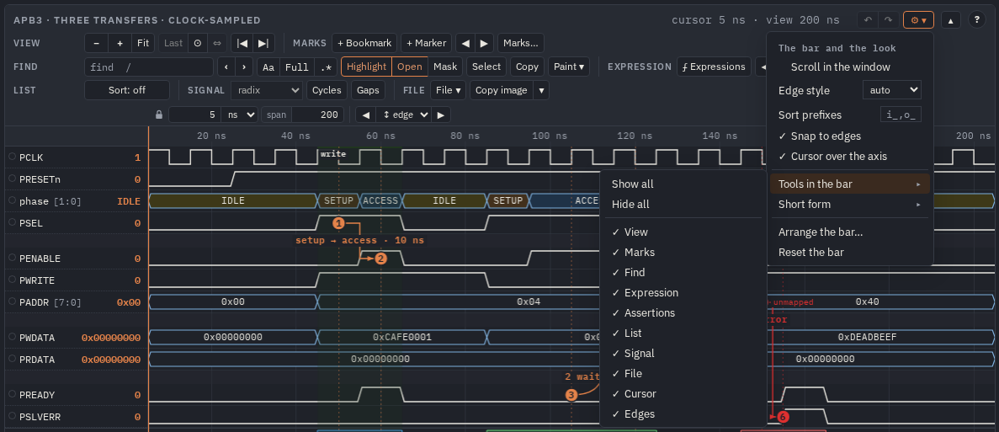
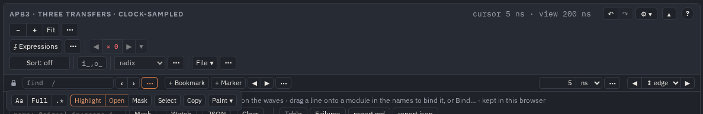
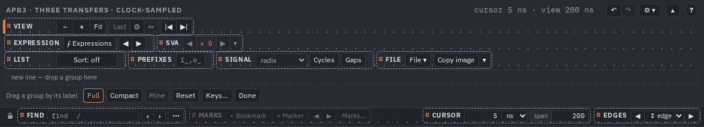
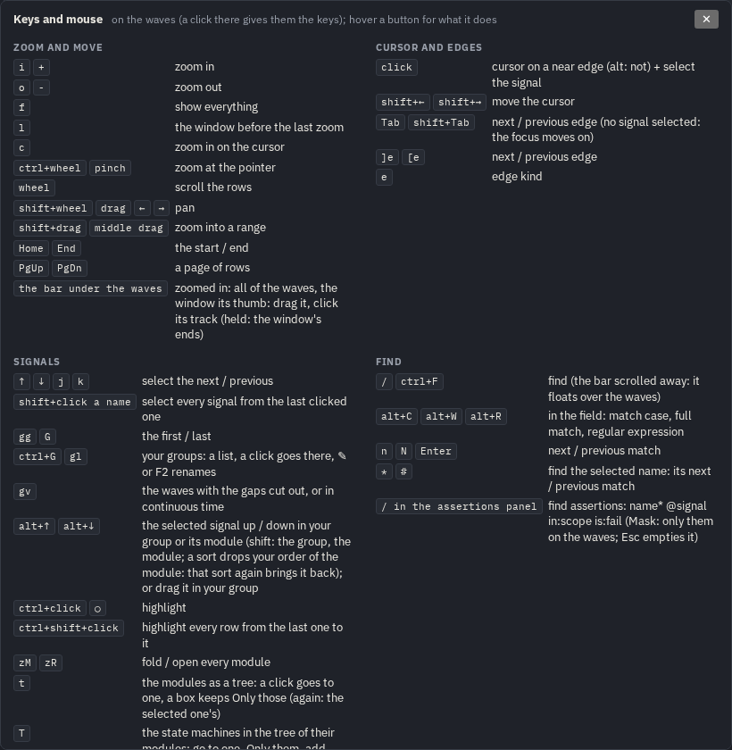

Keys, menus and the bar
Everything the viewer does is on a key, in a menu or on the bar, usually all three. The keys are those of Questa's wave window for moving in time and vim's for the rest; a box after the first key of a pair says what can follow, so nothing has to be learnt by heart. This guide is the map: where the keys go, the boxes, the right button's menu, the bar, your own keys, another keyboard layout, VS Code, and the table of them all.
Where the keys go
- The keys work on the waves: a click on them gives them the keys (the cursor goes there too). The names, the bar's buttons and the panels have keys of their own while they have the focus (a list's ↑ ↓, a menu's Enter).
- A field keeps what you type: the find, the cursor's time, a bookmark's label, a form. Esc in the find goes back to the waves.
- Esc anywhere in the viewer (but a bookmark's fields) resets: no search, no highlight, no selected signal; the window, the opened modules and the scroll stay.
- Of the ctrl keys the viewer takes ctrl+F (find), ctrl+C (the selected path; nothing selected: the browser's copy), ctrl+G (your groups), ctrl+Z ctrl+shift+Z ctrl+Y (undo, redo); every other — ctrl+S, ctrl+P, ctrl+T … — stays the browser's. Of the alt keys: alt+↑ alt+↓ (a row up or down) and, in the find field, alt+C alt+W alt+R.
The box of what can follow
Five keys start a pair: g (a menu of nearly everything), z (folding), y (copying), ]
(next) and [ (previous). Type the pair quickly and it just works. Wait a moment after the first key (200 ms, the setting
keyHints; false: never) and a box opens under the mouse pointer with what can follow: press the key, or
click it.
- The box waits as long as it is open; Esc or a click elsewhere closes it and does nothing else.
- A key it does not list does nothing (the toast says no such sequence); another first key starts its own box.
- It lists only what this page can do now: ]d with a dump compared, ]r ]w in VS Code, the plugins' pairs (bus transactions, expressions, assertions) when they are there, your own keys under Your keys.
- Where the window ends it opens left of the pointer or above it; before the mouse has moved on the page, in the bottom right corner.



The g menu
| Key | What | Key | What |
|---|---|---|---|
| Go to | |||
| gg | the first signal | gl | your groups… (a list; ctrl+G too) |
| gt | the modules… (the Modules panel) | gT | the state machines… |
| Markers and bookmarks | |||
| gm | the list of them… | gM / gB | a marker / a bookmark at the cursor |
| gd | show or hide the Δ between markers | gc | clear them all |
| The state (your view as a file) | |||
| gs / gL | save… / load… | gr | reload the state loaded last |
| The dump | |||
| gO / gR | open… / reload | gC | compare… (pick a dump as B) |
| g= | compare A and B over the window in sight | gb | the red mask over the differences off / on |
| gu | the runs kept… (VS Code: Runs) | ||
| More | |||
| gv | the gaps cut out of the waves, or continuous time again | gp | save the page |
Plugins add theirs under Plugins (gx: the list of expressions).
z, y, ] and [
| Key | What | Key | What |
|---|---|---|---|
| zR / zM | open / fold every module | zo zc za | open / fold / either the selected signal's module |
| zz | zoom to the range (else the two cursors) | ||
| yy | the selected signal's path | yn | its name |
| yt | the time of the cursor | yl | a link to here (the cursor, the signal) |
| yi | an image of the range (else the window) | yI | an image of all rows |
| ]b [b | next / previous bookmark | ]m [m | marker |
| ]e [e | edge of the selected signal | ]d [d | difference of a compare |
| ]r [r | run kept, picked as B (VS Code) | ]w [w | run kept shown as A (VS Code) |
| ]t [t | bus transaction | ]x [x, ]X [X | match of the expression, expression |
| ]f [f | assertion failure | ]a [a | assertion |
The right button's menu
The right button over the waves does what ctrl+drag does — a drag measures a range, a click takes none — then opens a menu of what is there: the range, a marker or a span under the pointer, the row, the moment, the picture. Over a name it is the row's menu. The Menu key (shift+F10) opens it at the cursor, on the selected row.
The blocks, from the top:
| Block | What is in it |
|---|---|
| the range (when there is one) | Zoom to the range, Range ▸ (Bookmarks at its ends, Copy Δ, Keep as span…; in VS Code Keep as a slice (Runs), Save as FST…), Clear the range |
| a marker or a span under the pointer | a marker: Its text…, its colour, Delete the marker; a span: As range, Delete the span |
| the row | Colour, Radix, Show as ▸ (analog, bits, type), Highlight, Duplicate, Hide, Copy the path, Assertions on this signal, Your groups ▸ |
| the moment | Here ▸: a bookmark or a marker here, Copy A · B · Δ, Copy link to here, Markers… |
| the picture | Copy image (yi), Export ▸ (PNG, SVG, all rows as SVG, WaveDrom, a piece of waves as WaveLens JSON) |
| the rest | Gaps ▸, Cycles ▸, Modules ▸ (Rows ▸ on waves without modules) |

In the menu: ↑ ↓ Home End through the items, → or Enter open a submenu,
← or Esc close it, Esc again closes the menu. The pointer opens a submenu at once, another after a short
rest on its header. A click of the left button while the right one is down puts a marker there at once (M1,
M2 …) instead of the menu. Every item and submenu: the viewer guide.
"contextMenu": false leaves the right button to the browser.
The bar
The bar's groups are on three lines: time (cursor, view, edges, marks, go to), find (find, expression, SVA), and the rows (list, signal, file, compare); the viewer guide has each group. Hover any control for what it does and its keys. Two menus hold what is not used every minute:
- File ▾: Open dump…, Compare with…, Sources…, Runs… (VS Code), Save view…, Load view…, Reload view, Forget the kept view…, Save page, Load assertions… — each with its g key.
- ⚙ ▾ (the right button anywhere on the bar opens it too): Theme ▸ (on a page without a theme button of its own), Scroll in the window, Edge style, Sort prefixes, Snap to edges, Strip over the axis, Tools in the bar ▸ (a tick per group), Short form ▸, Arrange the bar…, Reset the bar.


The short form. A bar narrower than 900 px (a side tab of VS Code; always with toolsCompact: true) drops the group
labels and puts the rarer controls of each group behind its ⋯. ▴ folds the tools into the
title line, ▾ tools opens them again.

Arranging the bar
⚙ ▾ → Arrange the bar…: drag a group by its label to another place, another line, a new line or the strip over the time axis; Esc during a drag puts it back. Without the mouse, Keys… lists the groups: alt+↑ alt+↓ move the one in focus within its line, alt+← alt+→ to the line before or after, Space shows or hides it. Done or Esc ends. The arrangement is kept in this browser for every viewer (in VS Code: every tab); the viewer guide has the rest.

Your own keys
The setting keys maps a key you type to one the viewer has (in the global config, a config file's "config", an
element's data-keys as JSON; the layers merge key by key):
"keys": {"gx": "gm", "M": "m", "ctrl+k": "ctrl+g", "m": null}
g x opens the markers' list, M puts a marker, ctrl+K lists your groups, m does
nothing. A key of yours is one key, a pair after g z y [ ], or a ctrl+
key; Esc, ? and the five first keys stay the viewer's. The boxes and ? list yours under Your
keys; an entry the viewer cannot take is said in the log.
Another keyboard layout
The keys work by their place on the keyboard, as on a US layout: on a Russian one ш zooms in as i does, х а is [f, the key of / finds. Latin letters, digits and signs typed as such are taken as they are; the fields take what you type.
In VS Code
The tab's keys are the viewer's and do not reach VS Code: the plain ones, and the ctrl / alt ones above, which mean
in the tab what they mean in VS Code (find, copy, undo). wavelens.keysToVSCode (default ["ctrl+G"], Go to Line)
are left to VS Code; the list of your groups is gl then. The others — ctrl+P, F1, ctrl+Tab,
ctrl+shift+… (but ctrl+shift+Z, redo) — are VS Code's.
All the keys
The box of ? (or ? at the right of the title line) has them all, the plugins' too:

Zoom and move
| i + / o - | zoom in / out |
| f | show everything |
| l | the window before the last zoom |
| c | zoom in on the cursor |
| ctrl+wheel, pinch | zoom at the pointer |
| wheel | scroll the rows |
| shift+wheel, drag, ← → | pan |
| shift+drag, middle drag | zoom into a range |
| Home / End | the start / end |
| PgUp PgDn | a page of rows |
| the bar under the waves | zoomed in: all of the waves, the window its thumb: drag it, click its track |
Cursor and edges
| click | cursor on a near edge (alt: not) + select the signal |
| shift+← shift+→ | move the cursor |
| Tab / shift+Tab, ]e / [e | next / previous edge (Tab with no signal selected: the focus moves on) |
| e | edge kind |
Signals
| ↑ ↓, j k | select the previous / next |
| shift+click a name | select every signal from the last clicked one |
| gg / G | the first / last |
| ctrl+G, gl | your groups: a list, a click goes there, ✎ or F2 renames |
| gv | the waves with the gaps cut out, or in continuous time |
| alt+↑ alt+↓ | the selected signal up / down in your group or its module (shift: the group, the module) |
| ctrl+click, ○ | highlight |
| ctrl+shift+click | highlight every row from the last one to it |
| zM / zR | fold / open every module |
| t | the modules as a tree (Modules) |
| T | the state machines in the tree of their modules |
| zc zo za | the selected signal's module |
B, click [7:0] | the selected bus bit by bit (again: folded) |
| s | sort |
| yy, ctrl+C | copy the path |
| yi / yI | copy an image of the range (else the window): its rows / all rows |
| zz | zoom to the range (else the two cursors) |
| Esc | reset: search, highlight, selection |
Find
| /, ctrl+F | find (the bar scrolled away: it floats over the waves) |
| alt+C alt+W alt+R | in the field: match case, full match, regular expression |
| n N, Enter | next / previous match |
| * # | find the selected name: its next / previous match |
| / in the Assertions panel | find assertions: name* @signal in:scope is:fail (Assertions) |
Measure and mark
| shift+click the waves | a second cursor: Δ to the cursor, in cycles of the clock |
| x | swap the cursors |
c147 in the cursor field | cycle 147 of the clock |
| ]d [d, d, D, gb | a dump compared: next / previous difference, the other run, both over each other, the red mask (Compare) |
| g= | compare A and B over the window in sight; zoomed since: again |
| gu, ]r [r, ]w [w | the runs kept (VS Code): the panel, B the next / previous run, A the next / previous run shown (Runs) |
| 1 … 9 | go to bookmark 1 … 9 |
| ctrl+drag (ctrl+click: clear) | measure a range: Δ, the edges or changes of that signal |
| alt+drag | a box: its time and its signals, then the menu |
| right button | a range and the menu |
| b, ]b [b | a bookmark at the cursor (its label asked); next / previous |
| m, ]m [m | a marker at the cursor (its label asked); next / previous |
| right button + click | a marker there at once (M1, M2 …) |
| gm | the markers and bookmarks: a list, ↑ ↓ go through them |
| drag a bookmark / a marker's text / a Δ | move it; shift+drag a bookmark: an arrow to another one |
The bar, menus, undo
| r / R | the last state loaded, read again (Reload) / the dump read again from the disk, the view kept (⟳) |
| g z y [ ] | the box of what can follow |
| t T, gm gl | the panels of the modules, the state machines; the lists of the marks, your groups |
| right button, Menu | the menu of what is there |
| ctrl+Z / ctrl+shift+Z, ctrl+Y | undo / redo |
| ? | the keys box |
The plugins' keys: ]t [t (bus transactions), ]x [x ]X [X gx (expressions), ]f [f ]a [a (assertions).